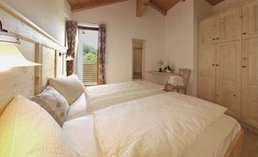

Il garnì
Le camere
- TV a schermo piatto e WiFi gratuito
- Alcune con area salotto, vista sulle montagne o sul giardino
- Camere familiari e appartamenti, camere per ospiti disabili, ascensore
- Sala colazione, soggiorno con TV, giardino e terrazza solarium
- Parcheggio privato gratuito
- Animali ammessi, senza supplemento